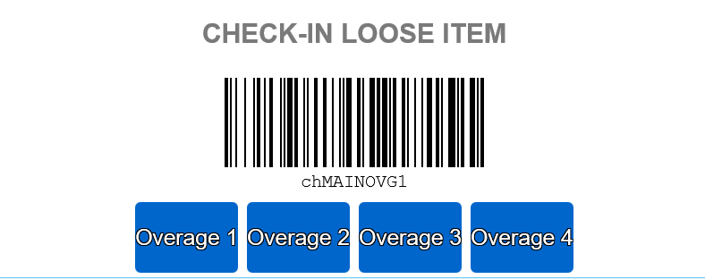
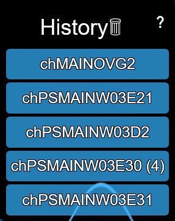

POPS Master User started as a way to scan the check in locations on-screen by displaying a barcode based on where you needed to place an item. Initially a volatile add-on only intended for problem solve leads due to the ability to misuse the add-on (possible to scan a check-in location and forget where you scanned). POPS MU now has a history listing of locations scanned as well as a few other treats.
Functions:
Barcode Generator: There are a few situations where POPS MU will generate a barcode.
When a loose items goes to overage, select a number to generate the overage bin of your choosing.

When checking in items, you will either be presented with letters representing the letters of the chutes and then an input field asking for a number to generate the chute to start placing a shipment in. Or if the shipment already has a chute, you will be presented with the barcode for that chute.
You can also generate a barcode for the PS totes from packers when selcting "scan from tote or SP00" allowing you to check items in directly from the totes without needing to collect them.
History List: This list is off to the left side to keep track of the barcodes that have been generated. A history of 5 unique barcodes is kept at any given time. If the same barcode is generated more than once in succession, a number will appear next to the barcode in parenthesis. Each of the barcodes in the list is also a link to FCResearch for that specific barcode.

Settings: A settings menu (⚙) can be found in the upper left hand side of the window. Several items include